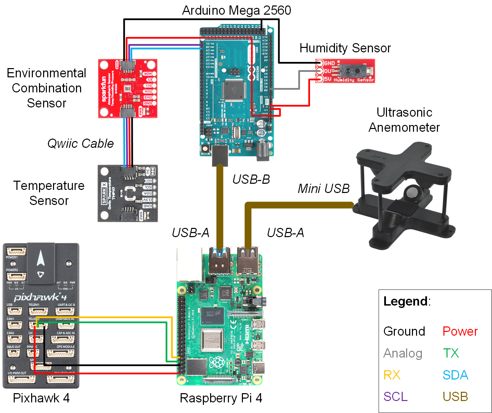

Weather Detection & Response UAV
Worked as a software systems engineer on a team of 6 engineers to develop a flight management computer for UAVs. Drone autonomously detects and responds to immediate weather conditions to ensure drone safety.

Overview
The purpose of this project is to improve the safety of autonomous unmanned aerial vehicle flight.
Our team designed and implemented a flight management computer that enables drones to autonomously detect and response to current weather conditions.
Strategically placed sensors on the drone collect data such as temperature, humidity, pressure, and wind speed.
The on-board computer processes this data in real time.
Using defined weather thresholds, the drone is able to determine if the data is indicative of inclement weather.
Finally, the drone makes the decision to continue on the flight path, return to the launch site, or land in a safe area.
Drone & Sensors
We used the Tarot 650 Sport Quadcopter because of its flight reliability and mounting options. The sensors from table 1, were strategically mounted to avoid down wash from the propellers. The flight management computer was placed on the lower mounting plate to keep sensitive electronics sheltered. A parachute was added to the drone as a last resort fail-safe.
Figure 1. Exploded views of the drone highlighting key components.
Table 1. Breakdown of all utilized data from on-board sensors. Measurement redundancies allow for sensor failure without system failure.
Flight Management Computer (FMC)
The FMC was my primary area of work. The system was built using three microcontrollers, an Arudino, a Raspberry Pi 4, and a Pixhawk 4.
The task of each microcontroller are as follows:
Arduino Mega 2560
1. Collect data from temperature, humidity, and environmental combination sensors
2. Send data to Raspberry Pi 4
Pixhawk 4
1. Send sensor data to Raspberry Pi 4
2. Receive flight commands from Raspberry Pi 4
3. Implement flight commands
Raspberry Pi 4
1. Aggregate sensor data from Arduino Mega 2560, Pixhawk 4, and the ultrasonic anemometer
2. Analyze data in real time
3. Compare data to defined weather thresholds
4. Send flight commands to Pixhawk based on data analysis
5. Record video during flight
6. Save all collected data to a .csv file

Figure 2. Schematic of all physical connections between microcontrollers and sensors.
Figure 3. Data flowchart of FMC. Communication protocols and software running on each microcontroller are highlighted in this diagram.
Conclusion
The FMS has the ability to be installed on various drones with minimal modifications. Flight safety is greatly improved while the FMS is continuously analyzing and reacting to weather conditions. Beyond safety, the FMS can also increase the efficiency of UAV flight. Moisture in the air can impact propeller performance, extreme temperatures can drain batteries faster than normal, wind can force UAVs to work harder than needed. By collecting weather data and making appropriate changes to flight plans, the range of a UAV’s flight can be extended. The technology demonstrated in this project is the start to improving autonomous drone flight through weather detection.